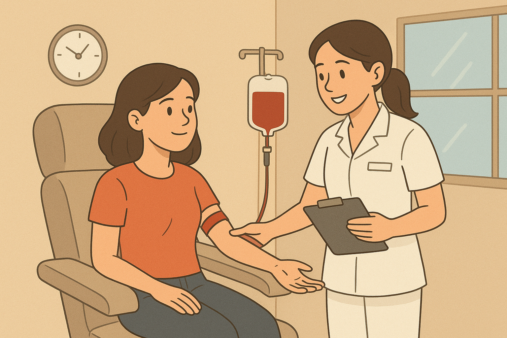

Ana passou pela triagem, descobriu que estava saudável e foi levada até a poltrona. Enquanto o sangue enchia a bolsa, ela sentiu um misto de nervosismo e orgulho. No fim, a enfermeira trouxe um lanche e a parabenizou:
“Você fez um gesto lindo hoje.”
